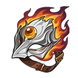
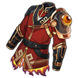
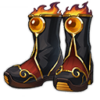
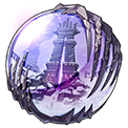

추천 광추
연옥을 불사른 새로운 몸
HP와 결계 공격 지원
효과 자세히
HP 비례 피해와 필살기 결계 운용에 맞는 전광.
바람에 흩날리는 거짓말
속도·방어력 감소 지원
효과 자세히
디버프와 빠른 행동 순서가 필요한 팀.
초보자 임무 시작 전
효과 명중 +40%
효과 자세히
방어력 감소 적 공격 후 에너지 8pt 회복.
땀방울처럼 빛나는 결심
땀방울 함락 방어력 −16%
효과 자세히
효과 명중 관리 필요. 결계와 추가 방어력 감소 조합.
추천 유물
신공을 탐구하는 명장 4 · 생명의 바커 공 2
- 머리

주옵션HP부옵션치명타 확률 · 치명타 피해 · 목표 속도 · HP% - 손
 주옵션공격력부옵션치명타 확률 · 치명타 피해 · 목표 속도 · HP%
주옵션공격력부옵션치명타 확률 · 치명타 피해 · 목표 속도 · HP% - 몸통

주옵션치명타 확률 / 효과 명중부옵션치명타 확률 (주옵션 제외) · 치명타 피해 · 목표 속도 · HP% - 다리

주옵션속도부옵션치명타 확률 · 치명타 피해 · 목표 속도 · HP% - 구체
 주옵션HP% / 화염 피해부옵션치명타 확률 · 치명타 피해 · 목표 속도 · HP% (주옵션 제외)
주옵션HP% / 화염 피해부옵션치명타 확률 · 치명타 피해 · 목표 속도 · HP% (주옵션 제외) - 매듭
 주옵션에너지 회복효율 / HP%부옵션치명타 확률 · 치명타 피해 · 목표 속도 · HP% (주옵션 제외)
주옵션에너지 회복효율 / HP%부옵션치명타 확률 · 치명타 피해 · 목표 속도 · HP% (주옵션 제외)
이 조합을 추천하는 이유
결계·필살기에 맞는 지원 유물. 바커 공으로 첫 행동을 앞당긴다.
밤낮의 경계를 나는 매 4 · 고요한 습골지 2
- 머리
 주옵션HP부옵션치명타 확률 · 치명타 피해 · 목표 속도 · HP%
주옵션HP부옵션치명타 확률 · 치명타 피해 · 목표 속도 · HP% - 손
 주옵션공격력부옵션치명타 확률 · 치명타 피해 · 목표 속도 · HP%
주옵션공격력부옵션치명타 확률 · 치명타 피해 · 목표 속도 · HP% - 몸통
 주옵션치명타 확률 / 효과 명중부옵션치명타 확률 (주옵션 제외) · 치명타 피해 · 목표 속도 · HP%
주옵션치명타 확률 / 효과 명중부옵션치명타 확률 (주옵션 제외) · 치명타 피해 · 목표 속도 · HP% - 다리
 주옵션속도부옵션치명타 확률 · 치명타 피해 · 목표 속도 · HP%
주옵션속도부옵션치명타 확률 · 치명타 피해 · 목표 속도 · HP% - 구체

주옵션HP% / 화염 피해부옵션치명타 확률 · 치명타 피해 · 목표 속도 · HP% (주옵션 제외) - 매듭
 주옵션에너지 회복효율 / HP%부옵션치명타 확률 · 치명타 피해 · 목표 속도 · HP% (주옵션 제외)
주옵션에너지 회복효율 / HP%부옵션치명타 확률 · 치명타 피해 · 목표 속도 · HP% (주옵션 제외)
이 조합을 추천하는 이유
필살기 후 행동 당김. HP 5,000 이상이면 장신구 치피 효과 강화.
이 정도면 잘 키웠다
동일 파티·광추 기준 · 조건 [*]
| 스탯 | 추천 스탯 | 준종결 | 종결 |
|---|---|---|---|
| 속도 [*] 170은 사이퍼 전광의 추가 효과와 결계 행동 순서를 함께 검토. | 마을 134 | 마을 160 | 마을 170 선택 |
| HP [*] 스킬·필살기의 HP 소모와 피해 계수. | 마을 6,000+ | 마을 6,000+ | 마을 6,000+ |
| 효과 명중 [*] 명중을 요구하는 광추에만 적용하는 편성 분기. | 마을 0% 선택 | 마을 40% 선택 | 마을 67% 선택 |
| 치명타 확률 [*] 필살기 결계 Lv.10 치확 +60%를 포함. | 전투 100% | 전투 100% | 전투 100% |
| 치명타 피해 [*] 결계 치피 +50% 적용 전 장비 참고. | 마을 130%+ | 마을 130%+ | 마을 130%+ |
육성 단계의 기준
Lv.80·유물 +15 기준. 입문·중간 목표는 육성 편의를 위한 단계이며, 완성값의 버프와 편성 조건은 각주를 확인.
성혼과 추천 돌파
디버프 강화는 1돌, 필살기와 추가 공격 연계는 2돌.
1결계 적 저항 −20%추천
추가 스킬 후 끝없는 분노 카운트다운 행동 게이지 −15%.
2아군 피해 필살기 → 추가 공격으로 간주추천
팀 추가 공격 피해 +75%. 충전 상한 7pt.
3필살기·특성 +2
해당 스킬과 대응 강화 스킬의 레벨을 올린다.
4만쉬심 아군 피해 +50% 추가
여한을 벼려 이룬 검골
5전투 스킬 +2 · 일반 공격 +1
해당 스킬과 대응 강화 스킬의 레벨을 올린다.
6피격·HP 소모 시 충전 +1
대상 턴마다 재발동. 결계 종료 공격 배율 기존의 150%.
추천 파티


기본 운영과 행적
기본 운영
필살기로 결계. 적이 없거나 HP가 위험할 때 스킬을 아낀다. 아군 공격으로 충전 9pt가 차면 추가 스킬.
행적 육성 순서
필살기 → 전투 스킬·특성 → 일반 공격. 승급 2단계 에너지 보존과 4단계 결계 피격 충전.
아하 속도 계산기 →기준과 출처 · 2026-11-25
4.7 게임 데이터 · Prydwen 개별 빌드